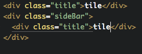

Кастомные свойства в css
Alexey Khlebaev
Кастомные свойства в css

Куда катится css?

Кастомные свойства
- Аналог переменных в препроцессорах
Какие проблемы решают:
- Уменьшение количества повторяющегося кода в CSS
- Гибкость и управляемость кода
- Cоздание впечатляющих эффектов (смены тем на лету) - !
- Название содержит семантическую информацию
Кастомные свойства
Поддержка

Кастомные свойства
:root {
--main-bg-color: brown;
}
body {
background-color: var(--main-bg-color);
}
Кастомные свойства. Js
var styles = getComputedStyle(document.documentElement);
var value = String(styles.getPropertyValue('--primary-color')).trim();
styles.setProperty('--primary-color', 'green');
Кастомные свойства. Первые впечатления

Все круто, но
- Что за уродливый синтаксис?
- В Sass уже есть переменные
Что не могут препроцесорные переменные.
Меняться в зависимости от @media запросов
:root {
--gutter: 1em;
}
@media (min-width: 30em) {
--gutter: 2em;
}
.Container {
padding: var(--gutter);
}
Что не могут препроцесорные переменные.
Меняться в зависимости от @media запросов
gutter: 1em;
@media (min-width: 30em) {
gutter: 2em;
}
.Container {
padding: gutter;
}
Что не могут препроцесорные переменные.
Меняться в зависимости от @media запросов
gutter = 12px
.Container {
padding: gutter;
}
@media (min-width: 30em) {
gutter = 14px
.Container {
padding: gutter;
}
}
Что не могут препроцесорные переменные.
Меняться в зависимости от вложенности
:root {
--titleColor: red;
}
.title {
color: var(--titleColor);
}
.sideBar {
--titleColor: blue;
}

Что не могут препроцесорные переменные.
Меняться в зависимости от вложенности
--titleColor = #fff;
.title {
--titleColor = #000
}
.sideBar .title {
color: --titleColor
}
.sideBar .title {
color: #fff;
}
Demo

@apply
- Аналог миксина
- Позволяет подключать набор свойств
- Синтаксис как у кастомных свойств, только с "{ }"
@apply

Выводы
- CSS стремится воплотить фишки препроцессоров
- Скоро мы будем снова писать на чистом CSS
- Новые инструменты для нетривиальных задач
Ссылки
- http://frontender.info/css-variables-why-should-you-care/
- http://philipwalton.com/articles/why-im-excited-about-native-css-variables/
- https://blog.gospodarets.com/css_properties_in_depth
- https://tabatkins.github.io/specs/css-apply-rule/
- https://blog.gospodarets.com/css_apply_rule?utm_source=CSS-Weekly&utm_campaign=Issue-211&utm_medium=email
Fork me on GitHub